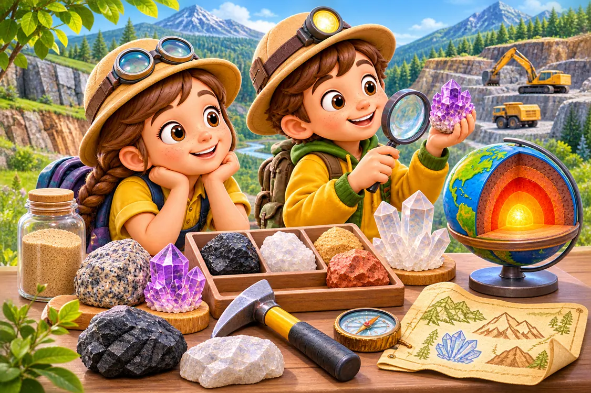
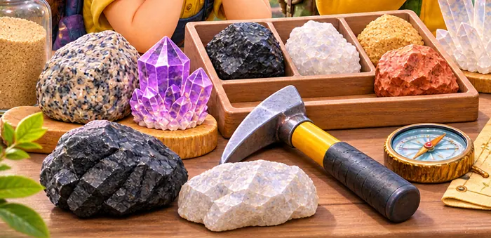
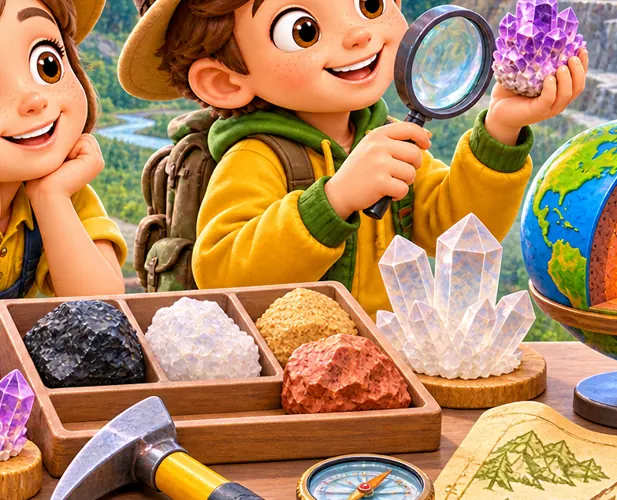
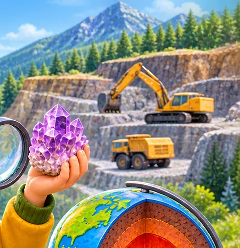

Гірські породи. Використання корисних копалин
Як із природних матеріалів створюють будинки, дороги, скло й тепло? Станьте дослідниками!
🚀 Почати експедицію
💭 Де заховані природні матеріали?
Уявіть: ви будуєте будинок. Що з переліченого може походити з гірських порід?
Оберіть одну або кілька відповідей, потім перевірте припущення.
📖 Коротке пояснення
Гірські породи утворюють земну кору. Корисні копалини — природні речовини й гірські породи, які люди видобувають і використовують. Пісок потрібен для виготовлення скла, глина — для цегли, граніт — для будівництва, кам’яне вугілля — як паливо.
🔎 Музей чотирьох зразків
Відкрийте кожний зразок. Розгляньте властивості й дізнайтеся, де його використовують.

🧩 Знайдіть пару «копалина — виріб»
Торкніться назви копалини, а потім відповідного виробу. На комп’ютері можна також перетягувати картки.

Знайдено 0 з 4 пар.
⛏️ Розвідка родовища
Уявіть, що родовище містить 100 умовних одиниць корисної копалини. Виберіть обсяг видобування та кількість матеріалу, яку можна повторно використати. Подивіться, що залишиться в природі.

Потреба у новій сировині після повторного використання:
Залишок у родовищі:
Змініть обидва повзунки та порівняйте результати.
💡 Подумайте
Що зміниться, якщо повторно використовувати більше скла або металу? Чому це допомагає зберігати природні ресурси? Модель умовна: справжні родовища складніші.
🏡 Допоможіть облаштувати містечко
Виберіть найбільш доречний матеріал для кожного завдання.
🎯 Три ключові запитання
🌟 Власний висновок
Чому корисні копалини потрібно використовувати ощадливо? Наведіть приклад із повсякденного життя.
PDF формується у вікні друку браузера: оберіть «Зберегти як PDF». Відповіді не надсилаються на сервер.